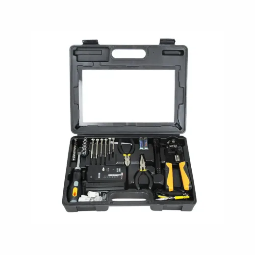
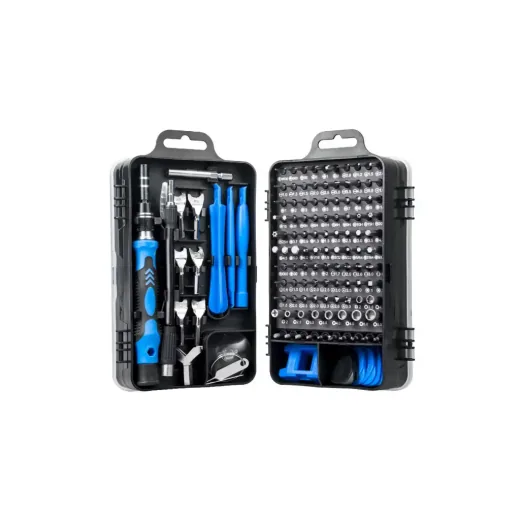
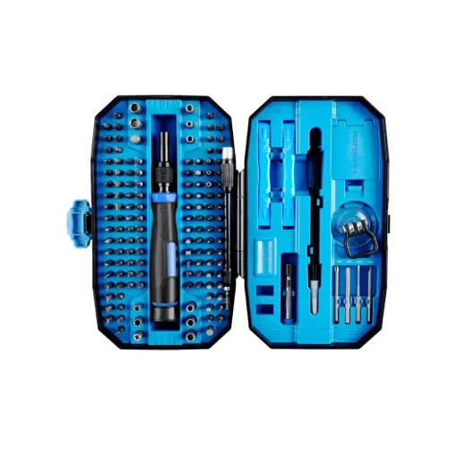
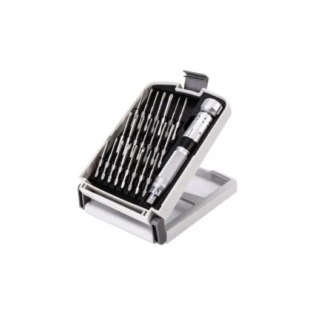
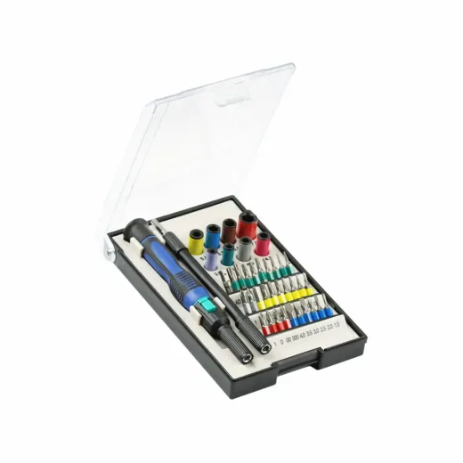
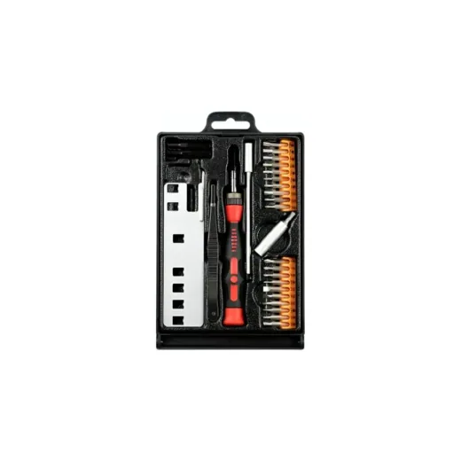
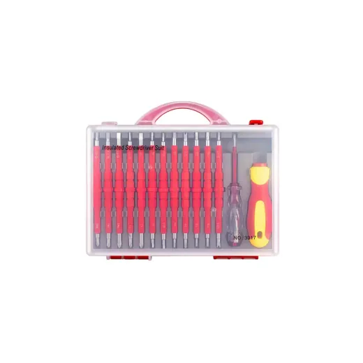
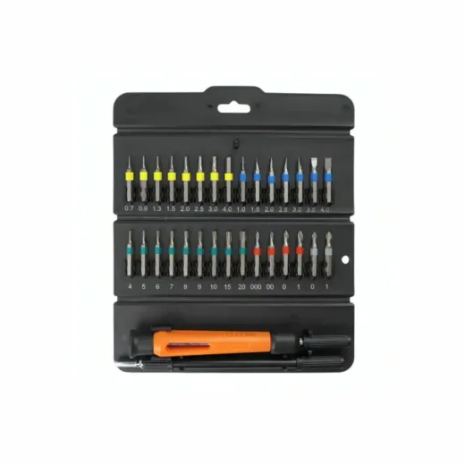
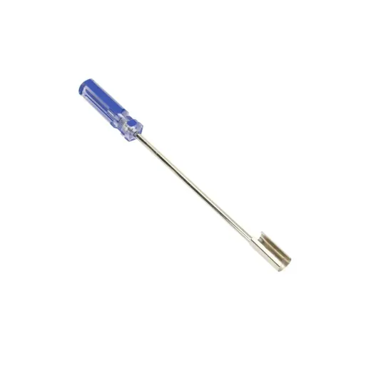

Inicio › Otros de tecnología y hogar

Desarmador · Modelo STK9860N
Kit de Desarmador de Precision + Red SPROTEK STK-9860N
L 1,195
En Sycom
Precio en cada tienda
| Tienda | Precio | Antes | Disponibilidad | |
|---|---|---|---|---|
| Sycom | L 1,195 | — | Disponible | Ver en tienda › |
Precios referenciales tomados de cada tienda el 14 de noviembre de 2026. El precio válido es el que muestra la tienda al comprar.
Otros otros de tecnología y hogar Desarmador

Kit de Desarmador de Precision 135 PiezasL 995En Sycom
Kit de Desarmador de Precision 152 PiezasL 995En Sycom
Kit de Desarmador de Precision 22 Piezas NanchL 900En Sycom
Kit de Desarmador de Precision SPROTEK STD-6235 40 PiezasL 690En Sycom
Kit de Desarmador de Precision para Consolas SPROTEK STK-2816 20 PiezasL 517.5En Sycom
Kit de Desarmador Aislados 26 Piezas 3017L 460En Sycom
Kit de Desarmador de Precision SPROTEK STD-6219 32 PiezasL 420En Sycom
Desarmador BNCL 195.01En Sycom